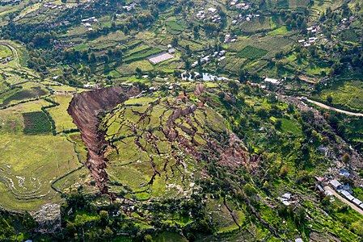
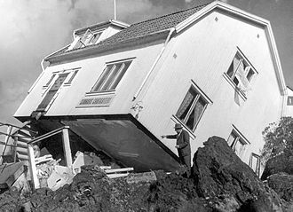
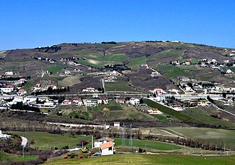

Landslides
The term landslide or, less frequently, landslip, refers to several forms of mass wasting that include a wide range of ground movements, such as rockfalls, deep-seated slope failures, mudflows and debris flows. Landslides occur in a variety of environments, characterized by either steep or gentle slope gradients: from mountain ranges to coastal cliffs or even underwater, in which case they are called submarine landslides. Gravity is the primary driving force for a landslide to occur, but there are other factors affecting slope stability which produce specific conditions that make a slope prone to failure. In many cases, the landslide is triggered by a specific event (such as a heavy rainfall, an earthquake, a slope cut to build a road, and many others), although this is not always identifiable.Landslides occur when the slope (or a portion of it) undergoes some processes that change its condition from stable to unstable. This is essentially due to a decrease in the shear strength of the slope material, to an increase in the shear stress borne by the material, or to a combination of the two. A change in the stability of a slope can be caused by a number of factors, acting together or alone. Natural causes of landslides include:
- saturation by rain water infiltration, snow melting, or glaciers melting;
- rising of groundwater or increase of pore water pressure (e.g. due to aquifer recharge in rainy seasons, or by rain water infiltration);
- increase of hydrostatic pressure in cracks and fractures;
- loss or absence of vertical vegetative structure, soil nutrients, and soil structure (e.g. after a wildfire – a fire in forests lasting for 3–4 days);
- erosion of the toe of a slope by rivers or ocean waves;
- physical and chemical weathering (e.g. by repeated freezing and thawing, heating and cooling, salt leaking in the groundwater or mineral dissolution);
- ground shaking caused by earthquakes, which can destabilize the slope directly (e.g. by inducing soil liquefaction), or weaken the material and cause cracks that will eventually produce a landslide;
- volcanic eruptions;
Debris flow
Slope material that becomes saturated with water may develop into a debris flow or mud flow. The resulting slurry of rock and mud may pick up trees, houses and cars, thus blocking bridges and tributaries causing flooding along its path. Debris flow is often mistaken for flash flood, but they are entirely different processes. Muddy-debris flows in alpine areas cause severe damage to structures and infrastructure and often claim human lives. Muddy-debris flows can start as a result of slope-related factors and shallow landslides can dam stream beds, resulting in temporary water blockage. As the impoundments fail, a "domino effect" may be created, with a remarkable growth in the volume of the flowing mass, which takes up the debris in the stream channel. The solid–liquid mixture can reach densities of up to 2,000 kg/m3 (120 lb/cu ft) and velocities of up to 14 m/s (46 ft/s). These processes normally cause the first severe road interruptions, due not only to deposits accumulated on the road (from several cubic metres to hundreds of cubic metres), but in some cases to the complete removal of bridges or roadways or railways crossing the stream channel. Damage usually derives from a common underestimation of mud-debris flows: in the alpine valleys, for example, bridges are frequently destroyed by the impact force of the flow because their span is usually calculated only for a water discharge. For a small basin in the Italian Alps (area 1.76 km2 (0.68 sq mi)) affected by a debris flow, estimated a peak discharge of 750 m3/s (26,000 cu ft/s) for a section located in the middle stretch of the main channel. At the same cross section, the maximum foreseeable water discharge (by HEC-1), was 19 m3/s (670 cu ft/s), a value about 40 times lower than that calculated for the debris flow that occurred.
Earthflow
An earthflow is the downslope movement of mostly fine-grained material. Earthflows can move at speeds within a very wide range, from as low as 1 mm/yr (0.039 in/yr) to 20 km/h (12.4 mph). Though these are a lot like mudflows, overall they are more slow moving and are covered with solid material carried along by flow from within. They are different from fluid flows which are more rapid. Clay, fine sand and silt, and fine-grained, pyroclastic material are all susceptible to earthflows. The velocity of the earthflow is all dependent on how much water content is in the flow itself: the higher the water content in the flow, the higher the velocity will be. These flows usually begin when the pore pressures in a fine-grained mass increase until enough of the weight of the material is supported by pore water to significantly decrease the internal shearing strength of the material. This thereby creates a bulging lobe which advances with a slow, rolling motion. As these lobes spread out, drainage of the mass increases and the margins dry out, thereby lowering the overall velocity of the flow. This process causes the flow to thicken. The bulbous variety of earthflows are not that spectacular, but they are much more common than their rapid counterparts. They develop a sag at their heads and are usually derived from the slumping at the source. Earthflows occur much more during periods of high precipitation, which saturates the ground and adds water to the slope content. Fissures develop during the movement of clay-like material which creates the intrusion of water into the earthflows. Water then increases the pore-water pressure and reduces the shearing strength of the material.
Landslides In Myanmar
There were two famous landslides in Myanmar which caused great damage. They are;
---------------
1. 2019 Hpakant jade mine collapse
2. Hpakant jade mine disaster
See more about myanmar landslides by clicking ----